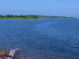
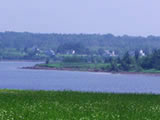
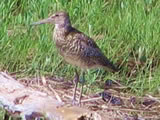
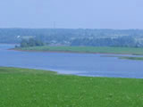
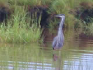
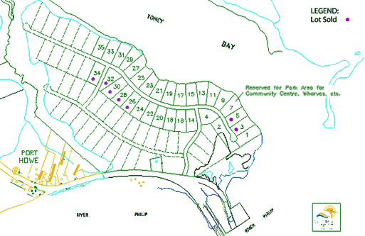

Other properties for sale
|      |
Sandpiper Ridge at Toney Bay - Port Howe, Nova ScotiaAnother new exciting development, if your primary requirement is an oceanfront lot, we are at the early stages of a new project, Sandpiper Ridge at Toney Bay in Port Howe, Nova Scotia. The lots are approximately 1.7 acres in area and 200 feet wide. They are located on Toney Bay, which is a tidal bay located at the confluence of the River Philip and the Northumberland Strait. The Northumberland Strait has the warmest water north of the Carolinas and Toney Bay itself is a protected shallow bay safe for children and affording a well protected harbour for small boats. Large fixed keel sail boats can anchor safely in the River Philip and the Pugwash Marina is a pleasant sail just 5 km. down the coast without even venturing outside the headlands. The Bay abounds with wild life: seals and birds too numerous to mention. For convenience, there are two restaurants and a motel just across the River Philip and a Lobster Pound (in season) and general store directly behind the development on the Sunrise Trail. For the golfer, the Northumberland Links (the best public course in Northern Nova Scotia) is less than 10 km. the other side of the Village of Pugwash. This is a brand new development. Ocean front lots are $95,000 while back lots are $45,000.00 (plus HST). Please take some time and visit our web site www.sandpiperridge.comfor everything Sandpiper Ridge at Toney Bay has to offer. This is choice property and one would be well advised to act quickly as the best lots always go first. If you have further questions or comments please contact me anytime (800-668-4337).  |
 Download as PDF
Download as PDF